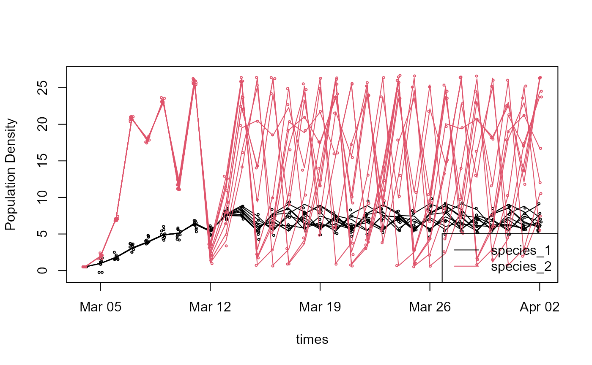

logistic-metadata-example.Rmd
library(EML)
library(ncdf4)
library(emld)
library(lubridate)
library(tibble)
library(dplyr)
library(tidyr)
library(reshape2)
emld::eml_version("eml-2.2.0")## [1] "eml-2.2.0"
set.seed(42)A simple, example forecast of population growth of two interacting species
========================================================
To illustrate the application of the forecast standard, we’ll consider the classic Lotka-Volterra population growth model. To keep this first example simple, we’ll only consider two species and two uncertainties - an additive process error, which converts this to a stochastic Lotka-Volterra, and an observation error. We’ll propagate uncertainty by running multiple ensembles. To illustrate the ability of the output format to accommodate spatial dimensions, we’ll run the model at multiple depths in a water column (e.g. lake or ocean) but those depths are not interacting – we know this isn’t realistic, but we want to keep things simple. Overall, this gives us the following dimensions
forecast_issue_time = as.Date("2001-03-04") ## start date of our forecast
n_time <- 30
times = seq(from=forecast_issue_time,by="1 day",length=n_time)
depths <- c(1, 3, 5)
n_depths <- length(depths)
n_ensembles <- 10
ensembles <- seq_len(n_ensembles)
species <- c("species_1","species_2")
n_species <- length(species)
obs_dim <- 2 ## 1 = latent state
## 2 = latent state + observation errorNext we’re going to assume fixed parameters and initial conditions, set up storage for our forecast output (which we see has 5 dimensions), and then forward simulate the populations
## parameters for species_1 and species_2
r <- c(1, 3)
K <- c(10, 20)
alpha <- c(0.2, 0.3)
## process error
process_sd <- 0.01
## observation error
obs_sd <- c(0.5,0.2)
## initial conditions
n0 <- 0.5
## forecast output storage
n <- array(NA,dim = c(n_time, n_depths, n_ensembles, obs_dim,2)) ## last dim is species
n[1,,,,] <- n0
## forecast flag
forecast <- rep(0, n_time) ## this code indicated a hindcast
## data assimilation flag
data_assimilation <- rep(0, n_time) ## this code indicates a 'free-run' that didn't assimilate new data
## forward simulation
for(t in 2:n_time){
for(depth in 1:n_depths){
for(ens in 1:n_ensembles){
## predict latent state
n_curr <- n[t-1,depth,ens,1,] ## current state
n[t, depth, ens,1,1] <- n_curr[1] +
r[1]*n_curr[1]*(1-((n_curr[1] +
alpha[1]*n_curr[2])/K[1])) + rnorm(1, 0, process_sd)
n[t, depth, ens,1,2] <- n_curr[2] +
r[2]*n_curr[2]*(1-((n_curr[2] +
alpha[2]*n[1])/K[2])) + rnorm(1, 0, process_sd)
## predict observed values
n[t,depth,ens,2,] = rnorm(2,n[t,depth,ens,1,],obs_sd)
}
}
}Here’s a simple visualization of our ensemble forecast at one depth
plot(times,n[,1,1,1,1],ylim=range(n),ylab="Population Density",type='l')
for(s in seq_along(species)){ ##species
for(e in ensembles){
lines(times,n[,1,e,1,s],col=s) ## latent
points(times+runif(n_time,-0.12,0.12),n[,1,e,2,s],col=s,cex=0.35) ## pseudo-obs w/ jitter
}
}
legend("bottomright",legend=species,col = seq_along(species),lty = 1)
Because netCDF is a self-documenting format we’re going to start by defining some forecast identifiers (which we’ll also later use in the metadata)
forecast_project_id identifies forecasts coming from a single project and is used to link forecasts different model versions. Examples might include a project Github repository or a team name.
forecast_model_id is updated each time the forecast code is modified (e.g. model structure, model calibration, forecast workflow). Examples might be a DOI, version number, or Github hash. Results from a single forecast_model_id are considered comparable.
forecast_iteration_id represents a unique ID for each forecast run. Examples might be a start time or database ID.
For example, if you have a forecast code base on GitHub and launch a forecast from that code that runs daily for 365 days, then there will be one forecast_project_id and 365 forecast_iteration_ids. A paper analyzing the forecasts would cite the forecast_project_id.
forecast_project_id <- "LogisticDemo"
forecast_model_id <- "v0.3"
forecast_iteration_id <- "20010304T060000" # ISO datetime should make a valid Forecast_idOnce we have our ID’s defined, we’re going to use ncdim_def to define the dimensions that our output variables will have
## Set dimensions
timedim <- ncdim_def("time", ## dimension name
units = paste('days since',forecast_issue_time),
## size of timestep, with units and start date
vals = as.numeric(times - forecast_issue_time),
## sequence of values that defines the dimension.
## netCDF expresses time dimensions relative to a
## specified start date, in this case forecast_issue_time
longname = 'time')
## descriptive name
depthdim <- ncdim_def("depth",
units = "meters",
vals = depths,
longname = 'Depth from surface')
ensdim <- ncdim_def("ensemble",
units = "",
vals = ensembles,
longname = 'ensemble member')
obsdim <- ncdim_def("obs_flag",
units = "",
vals = 1:obs_dim,
longname = "observation error flag. 1 = latent state, 2 = w/ obs error")
## quick check that units are valid
udunits2::ud.is.parseable(timedim$units)## [1] TRUE
udunits2::ud.is.parseable(depthdim$units)## [1] TRUE
udunits2::ud.is.parseable(ensdim$units)## [1] TRUE
udunits2::ud.is.parseable(obsdim$units)## [1] TRUEOnce we’ve defined our dimensions, we can then define the metadata about our variables using ncvar_def
fillvalue <- 1e32 ## missing data value
#Define variables
def_list <- list()
def_list[[1]] <- ncvar_def(name = "species_1",
units = "number of individuals",
dim = list(timedim, depthdim, ensdim, obsdim),
missval = fillvalue,
longname = '<scientific name of species 1>',
prec="single")
def_list[[2]] <- ncvar_def(name = "species_2",
units = "number of individuals",
dim = list(timedim, depthdim, ensdim, obsdim),
missval = fillvalue,
longname = '<scientific name of species 2>',
prec="single")
def_list[[3]] <- ncvar_def(name = "forecast",
units = "integer",
dim = list(timedim),
missval = fillvalue,
longname = 'EFI standard forecast code. 0 = hindcast',
prec="single")
def_list[[4]] <- ncvar_def(name = "data_assimilation",
units = "integer",
dim = list(timedim),
missval = fillvalue,
longname = 'EFI standard data assimilation code. 0 = no data',
prec="single")Finally, we’ll now create our netCDF file and add our outputs and global metadata to the file
## file name
ncfname <- "logistic-forecast-ensemble-multi-variable-space-long.nc"
## open your netCDF file
ncout <- nc_create(ncfname,def_list,force_v4=T)
## fill in our output data
ncvar_put(ncout,def_list[[1]] , n[, , , ,1 ]) ## species 1
ncvar_put(ncout,def_list[[2]] , n[, , , ,2 ]) ## species 2
ncvar_put(ncout,def_list[[3]] , forecast) ## forecast flag
ncvar_put(ncout,def_list[[4]] , data_assimilation) ## data_assimilation flag
## Global attributes (metadata)
ncatt_put(ncout,0,"forecast_project_id", as.character(forecast_project_id),
prec = "text")
ncatt_put(ncout,0,"forecast_model_id",as.character(forecast_model_id),
prec = "text")
ncatt_put(ncout,0,"forecast_iteration_id",as.character(forecast_iteration_id),
prec = "text")
nc_close(ncout) ## make sure to close the fileConvert to a flat file format (CSV) with one column for each variable and all ensemble members saved
## wrangle data into a tidy format
df_combined <- reshape2::melt(n,varnames=c("time","depth","ensemble","obs_flag","species")) %>%
pivot_wider(id_cols = 1:4,names_from = "species",names_prefix = "species_",values_from = "value") %>%
mutate(time = times[time]) %>%
mutate(depth = depths[depth]) %>%
right_join(data_frame(time=times,forecast=forecast,data_assimilation = data_assimilation))## Warning: `data_frame()` is deprecated as of tibble 1.1.0.
## Please use `tibble()` instead.
## This warning is displayed once every 8 hours.
## Call `lifecycle::last_warnings()` to see where this warning was generated.## Joining, by = "time"
head(df_combined)## # A tibble: 6 x 8
## time depth ensemble obs_flag species_1 species_2 forecast
## <date> <dbl> <int> <int> <dbl> <dbl> <dbl>
## 1 2001-03-04 1 1 1 0.5 0.5 0
## 2 2001-03-05 1 1 1 0.984 1.95 0
## 3 2001-03-06 1 1 1 1.82 7.16 0
## 4 2001-03-07 1 1 1 3.04 20.8 0
## 5 2001-03-08 1 1 1 3.88 17.8 0
## 6 2001-03-09 1 1 1 4.87 23.2 0
## # ... with 1 more variable: data_assimilation <dbl>
write.csv(df_combined,
file = "logistic-forecast-ensemble-multi-variable-multi-depth.csv")Convert to a flat file format (CSV) with forecast distribution summaries saved
## calculate summary statistics across ensemble members and output variables
dfs <- df_combined %>% pivot_longer(cols=5:6,names_to="species") %>% ## make species a column
group_by(time, depth,obs_flag,species,forecast,data_assimilation) %>%
summarize(mean = mean(value),
sd = sd(value),
Conf_interv_02.5 = quantile(value, 0.025),
Conf_interv_97.5 = quantile(value, 0.975)) %>%
pivot_longer(7:10,names_to="statistic") %>% ## make statistic column
pivot_wider(names_from=species,values_from = value) ## go back to species wide## `summarise()` regrouping output by 'time', 'depth', 'obs_flag', 'species', 'forecast' (override with `.groups` argument)
## recode statistics
dfs$statistic[dfs$obs_flag == 1 & dfs$statistic == "sd"] <- "se"
dfs$statistic[dfs$obs_flag == 2 & dfs$statistic == "Conf_interv_02.5"] <- "Pred_interv_0.25"
dfs$statistic[dfs$obs_flag == 2 & dfs$statistic == "Conf_interv_02.5"] <- "Pred_interv_0.25"
head(dfs)## # A tibble: 6 x 8
## # Groups: time, depth, obs_flag, forecast [2]
## time depth obs_flag forecast data_assimilati~ statistic species_1
## <date> <dbl> <int> <dbl> <dbl> <chr> <dbl>
## 1 2001-03-04 1 1 0 0 mean 0.5
## 2 2001-03-04 1 1 0 0 se 0
## 3 2001-03-04 1 1 0 0 Conf_int~ 0.5
## 4 2001-03-04 1 1 0 0 Conf_int~ 0.5
## 5 2001-03-04 1 2 0 0 mean 0.5
## 6 2001-03-04 1 2 0 0 sd 0
## # ... with 1 more variable: species_2 <dbl>
write.csv(dfs, file = "logistic-forecast-summary-multi-variable-multi-depth.csv")Let’s begin by documenting the metadata of the forecast output data table itself, which we’ll do using EML’s dataTable entity. In this example we’ll assume we’re working with format 2 (ensemble CSV), though most of the metadata would be identical for all three formats.
To start, the attributes table stores the basic metadata about the variable names and units.
## define variable names, units, etc
## in practice, this might be kept in a spreadsheet
attributes <- tibble::tribble(
~attributeName, ~attributeDefinition, ~unit, ~formatString, ~numberType, ~definition,
"time", "[dimension]{time}", "year", "YYYY-MM-DD", "numberType", NA,
"depth", "[dimension]{depth in reservior}", "meter", NA, "real", NA,
"ensemble", "[dimension]{index of ensemble member}", "dimensionless", NA, "integer", NA,
"obs_flag", "[dimension]{observation error}", "dimensionless", NA, "integer", NA,
"species_1", "[variable]{Pop. density of species 1}", "numberPerMeterSquared", NA, "real", NA,
"species_2", "[variable]{Pop. density of species 2}", "numberPerMeterSquared", NA, "real", NA,
"forecast", "[flag]{whether time step assimilated data}", "dimensionless", NA, "integer", NA,
"data_assimilation", "[flag]{whether time step assimilated data}", "dimensionless", NA, "integer", NA
)
## note: EML uses a different unit standard than UDUNITS. For now use EML. EFI needs to provide a custom unitList.
attributes## # A tibble: 8 x 6
## attributeName attributeDefinition unit formatString numberType definition
## <chr> <chr> <chr> <chr> <chr> <lgl>
## 1 time [dimension]{time} year YYYY-MM-DD numberType NA
## 2 depth [dimension]{depth i~ meter <NA> real NA
## 3 ensemble [dimension]{index o~ dimens~ <NA> integer NA
## 4 obs_flag [dimension]{observa~ dimens~ <NA> integer NA
## 5 species_1 [variable]{Pop. den~ number~ <NA> real NA
## 6 species_2 [variable]{Pop. den~ number~ <NA> real NA
## 7 forecast [flag]{whether time~ dimens~ <NA> integer NA
## 8 data_assimila~ [flag]{whether time~ dimens~ <NA> integer NA
attrList <- set_attributes(attributes,
col_classes = c("Date", "numeric", "numeric","numeric",
"numeric","numeric", "numeric","numeric"))Note that the EFI standard extends the EML attibuteDefinition to include a [variable_type] and {variable_definition}. The options for [variable_type] include: * dimension * variable = output variable * diagnostic = variable output purely for diagnostic purposes * observation = data that is or could be compared to an output_variable * obs_error * flag * initial_condition * driver * parameter * random_effect * process_error
We then link the attribute information with the info about a particular file
## sets metadata about the file itself (name, file type, size, MD5, etc)
physical <- set_physical("logistic-forecast-ensemble-multi-variable-multi-depth.csv",
recordDelimiter='\n')## Automatically calculated file size using file.size("logistic-forecast-ensemble-multi-variable-multi-depth.csv")## Automatically calculated authentication size using digest::digest("logistic-forecast-ensemble-multi-variable-multi-depth.csv", algo = "md5", file = TRUE)
## set metadata for the file as a whole
dataTable <- eml$dataTable(
entityName = "forecast", ## this is a standard name to allow us to distinguish this entity from
entityDescription = "Forecast of population size using a depth specific model",
physical = physical,
attributeList = attrList)Here entityName = "forecast" is a standard name within the EFI standard to allow us to distinguish this entity from metadata about parameters, drivers, etc.
There’s a lot more optional terminology that could be exploited here – for instance, the specification lets us define different missing value codes (and explanations) for each column, and allows us to indicate precision, minimum and maximum.
Note that physical type can document almost any formats as well, including NetCDF etc. A NetCDF file would still document the variables measured in much the same way regardless of the underlying representation.
Now that we’ve documented the actual data.frame itself, we can add additional metadata to the record describing our forecast, which is essential for citing, discovering, and interpreting the result. We start with some authorship information.
Set Taxonomic, Temporal, and Geographic Coverage. (Look, apparently we’re modeling population densities of Gloeotrichia echinulata and Anabaena circinalis cyanobacterium in Lake Sunapee, NH, USA)
taxa <- tibble::tribble(
~Genus, ~Species,
"Gloeotrichia", "echinulata",
"Anabaena", "circinalis")
coverage <-
set_coverage(begin = first(times),
end = last(times),
sci_names = taxa,
geographicDescription = "Lake Sunapee, NH, USA ",
west = -72.15, east = -72.05,
north = 43.48, south = 43.36)Our dataset needs an abstract describing what this is all about.
abstract_text <- system.file("extdata", "abstract.md", package="EFIstandards", mustWork = TRUE)Next, we’ll combine these various bits to document the output dataset as a whole
dataset = eml$dataset(
title = "A very simple Lotka-Volterra forecast",
creator = me,
contact = list(references="https://orcid.org/0000-0003-1282-7825"),
pubDate = forecast_issue_time,
intellectualRights = "http://www.lternet.edu/data/netpolicy.html.",
abstract = "An illustration of how we might use EML metadata to describe an ecological forecast",
dataTable = dataTable,
keywordSet = keywordSet,
coverage = coverage
)The EFI standard is using EML’s additionalMetadata capacity. Section 2.1 of the EFI standard describes both the basic elements (2.1.1) and the info about model structure and uncertainty (2.1.2).
additionalMetadata <- eml$additionalMetadata(
metadata = list(
forecast = list(
## Basic elements
timestep = "1 day", ## should be udunits parsable; already in coverage -> temporalCoverage?
forecast_horizon = "30 days",
forecast_issue_time = forecast_issue_time,
forecast_iteration_id = forecast_iteration_id,
forecast_project_id = forecast_project_id,
metadata_standard_version = "0.3",
model_description = list(
forecast_model_id = forecast_model_id,
name = "discrete Lotka–Volterra model",
type = "process-based",
repository = "https://github.com/eco4cast/EFIstandards/blob/master/vignettes/logistic-metadata-example.Rmd"
),
## MODEL STRUCTURE & UNCERTAINTY CLASSES
initial_conditions = list(
# Possible values: absent, present, data_driven, propagates, assimilates
status = "present",
# Number of parameters / dimensionality
complexity = 2 ## [species 1, species 2] per depth
),
drivers = list(
status = "absent"
),
parameters = list(
status = "present",
complexity = 6 ## [r, K, alpha] x 2 spp
),
random_effects = list(
status = "absent"
),
process_error = list(
status = "propagates",
propagation = list(
type = "ensemble", # ensemble vs analytic
size = 10 # required if ensemble
),
complexity = 2,
covariance = FALSE
),
obs_error = list(
status = "present",
complexity = 2,
covariance = FALSE
)
) # forecast
) # metadata
) # eml$additionalMetadataWithin the additionalMetadata, we anticipate the model structure info will be the most challenging to document. All six model structural elements / uncertainty classes need to be documented, even if just to record that a specific element is absent in the model. The six classes are:
| Class | Description |
|---|---|
| initial_conditions | Uncertainty in the initialization of state variables (Y) |
| drivers | Uncertainty in model drivers, covariates, and exogenous scenarios (X) |
| parameters | Uncertainty in model parameters (\(\theta\)) |
| random_effects | Unexplained variability and heterogeneity in model parameters (\(\alpha\)) |
| obs_error | Uncertainty in the observations of the output variables (g) |
| process_error | Dynamic uncertainty in the process model (\(\epsilon\)) |
Each class has a very similar structure and the only required element in each is status which can take on the following valid values
| status | Description |
|---|---|
| absent | This model does not contain this concept (e.g. a linear regression model doesn’t have initial conditions, random effects, or process_error). |
| present | The model contains this concept (e.g. the model has parameters), but the values used are not derived from data and no uncertainty is represented |
| data_driven | The model contains this concept and the inputs are data driven but uncertainty in this input is not explicitly propagated into predictions. |
| propagates | The model propagates uncertainty about this term into forecasts |
| assimilates | The model iteratively updates this term through data assimilation. |
Except for ‘absent’ this list is ordinal (e.g. data_driven implies present)
Next, the <complexity> tag is recommended, but not required, and should list the size/dimension of each status/uncertainty class at a single location (per dimensions defined above). For example, the logistic model has two initial conditions (n[1], n[2]), six parameters (r, K, and alpha for each species), and both process and observation error on the two state variables. absent statuses don’t need to be documented as 0 as this is implied.
The <covariance> tag states whether the errors/uncertainties within an uncertainty class are being treated as independent or not.
Finally, the <propagation> and <assimilation> tags provide additional information about the methods used (see EFI standard doc).
All we need now is to combine the dataset metadata with the forecast additionalMetadata
my_eml <- eml$eml(dataset = dataset,
additionalMetadata = additionalMetadata,
packageId = forecast_iteration_id ,
system = "datetime" ## system used to generate packageId
)Once we have finished building our EML metadata, we can confirm it is valid.
This will catch any missing elements. (Recall that what is ‘required’ depends on what you include – for example, you don’t have to document a dataTable at all, but if you do, you have to document the “physical” file format it is in
(e.g. csv) and the attributes and units it uses!)
## check base EML
eml_validate(my_eml)## [1] TRUE
## attr(,"errors")
## character(0)
## check that the EML is also a valid EFI forecast
EFIstandards::forecast_validator(my_eml)## * Checking Validity of EML file...## √ EML is valid## √ additionalMetadata found## √ metadata found## √ forecast found## √ timestep parsable## √ forecast_horizon parsable## √ forecast_issue_time found## √ forecast_iteration_id found## √ forecast_project_id found## √ metadata_standard_version found## √ model_description found## √ forecast_model_id found## √ name found## √ type found## √ repository found## √ initial_conditions found## √ status found## √ initial_conditions status/uncertainty class valid: present## √ complexity valid## √ parameters found## √ status found## √ parameters status/uncertainty class valid: present## √ complexity valid## √ drivers found## √ status found## √ drivers status/uncertainty class valid: absent## √ random_effects found## √ status found## √ random_effects status/uncertainty class valid: absent## √ process_error found## √ status found## √ process_error status/uncertainty class valid: propagates## √ complexity valid## √ type found## √ process_error propagation type valid: ensemble## √ size valid## √ obs_error found## √ status found## √ obs_error status/uncertainty class valid: present## √ complexity valid## [1] TRUE
## attr(,"errors")
## character(0)We are now ready to write out a valid EML document:
write_eml(my_eml, "forecast-eml.xml")## NULLAt this point, we could easily upload this metadata along with the data itself to a repository (e.g. DataONE) manually or via an API.
We can also generate a JSON-LD version of EML: